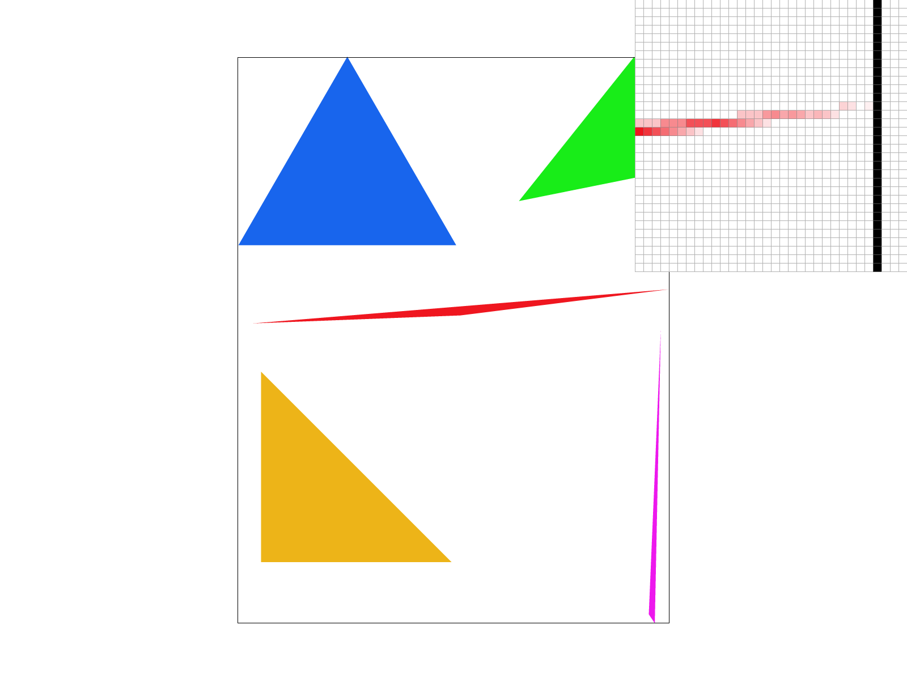
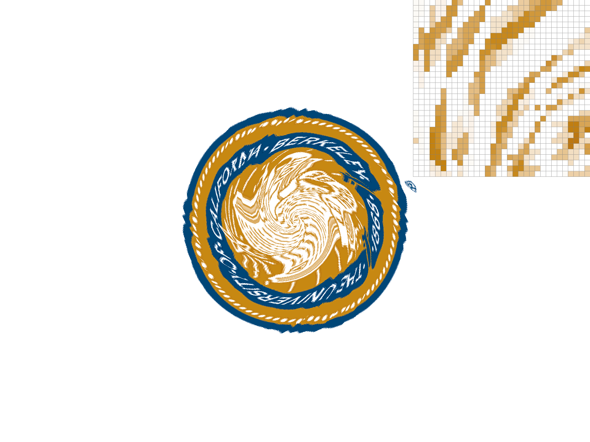
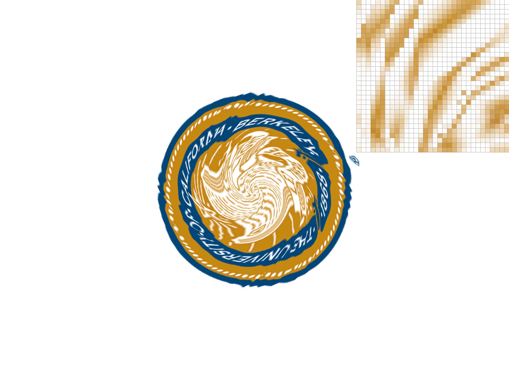
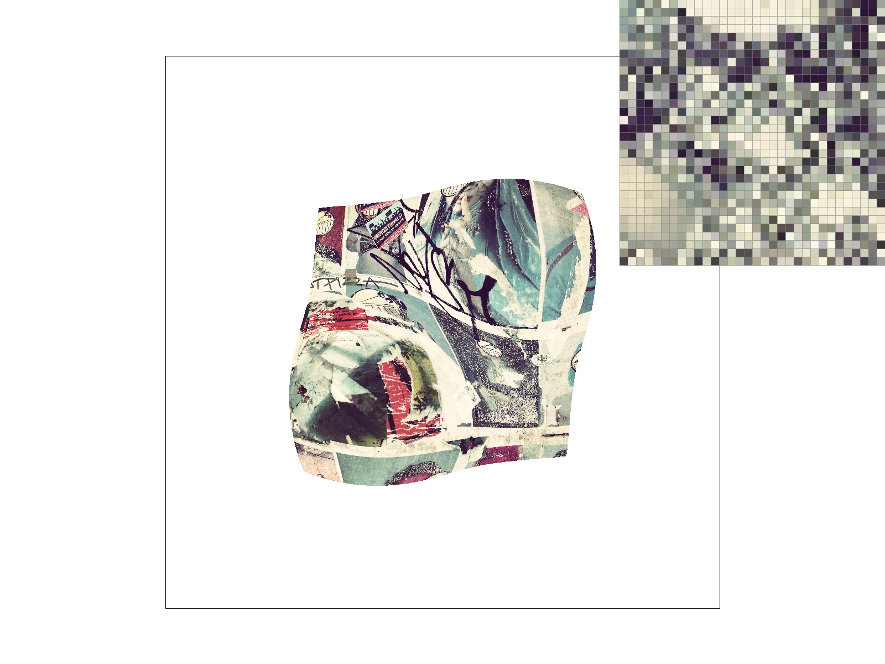
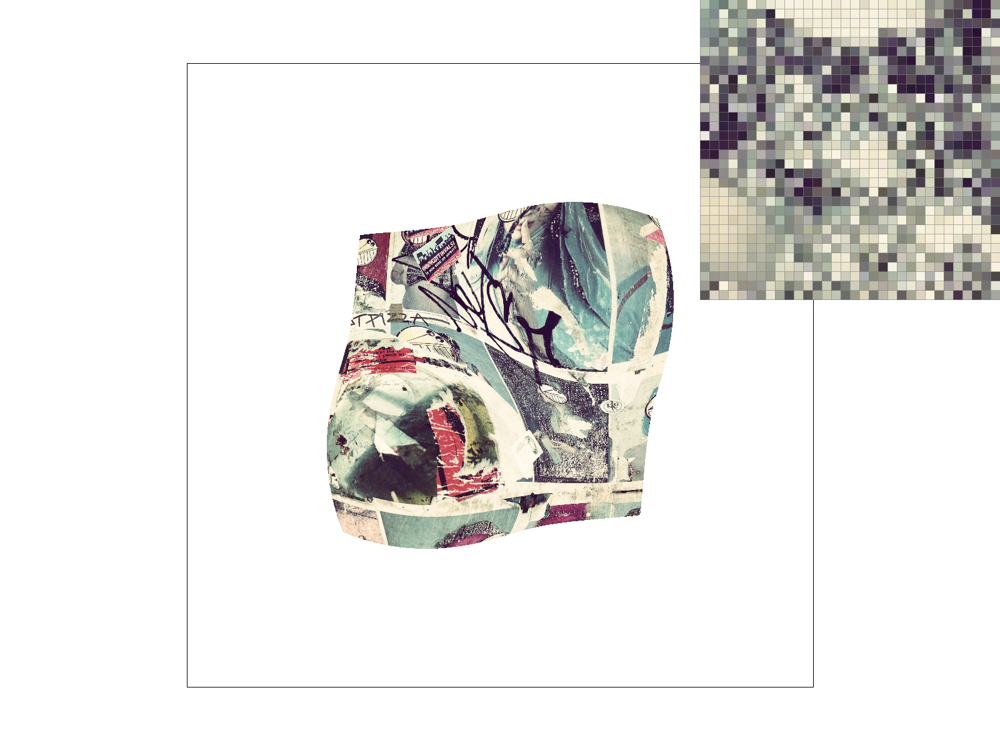
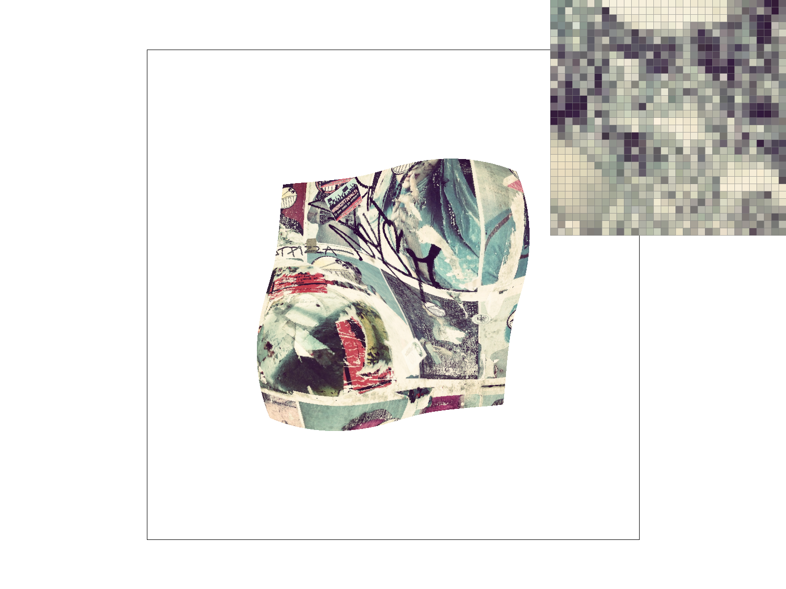

Overview
I have implemented a simple rasterization algorithm in c++ in this project, starting from a simple triangular rasterization to more advanced sampling strategy that includes the usage of mipmap. Through implementing the alorithm, I have learned that rasterization is all about sampling, and it is crucial to keep in mind which and where we are currently sampling to avoid any bugs in implementation. Due to the discrete nature of images, the interpolation plays an important role, and I believe this is where some modern method, such as Fourier Features Networks can be effectively employed to better approximate the texture / color value in a continuous space.
Section I: Rasterization
Part 1: Rasterizing single-color triangles
Walk through how you rasterize triangles in your own words. Explain how your algorithm is no worse than one that checks each sample within the bounding box of the triangle.The main challenge in rasterizing a triangle is to determine whether a pixel lies within a triangle or not. To check if this is true for a pixel, we define three distinct line functions each defined by two points of a triangle. Given three points A, B and C, if we were to construct a route of points, there would be only two; A-B-C variants (also B-C-A, C-A-B) and C-B-A variants (also B-A-C, A-C-B). These patterns follow the contour of a triangle in clockwise or counter-clockwise, and if a pixel satisfies the inner condition of a triangle with a A-B-C route, it would not meet the same criteria under the other C-B-A route. This unique characteristic lead me to implement a checker for both patterns, and if a pixel is said to be inside the triangle under either scenario, we can conclude that a pixel is indeed inside the triangle. This simple trick is useful to avoid the check of clockwise/counter-clockwise identification from three points, and therefore leads to a cleaner implementation.
Regarding to the sample efficiency, I am currently checking each pixel within the boundary of a triangle, given by the minimum and maximum coordinates values of three vertices of a triangle, A, B, C.
Show a png screenshot of basic/test4.svg with the default viewing parameters and with the pixel inspector centered on an interesting part of the scene.Part 2: Antialiasing triangles
Walk through your supersampling algorithm and data structures. Why is supersampling useful? What modifications did you make to the rasterization pipeline in the process? Explain how you used supersampling to antialias your triangles.While the dimension of the rgb buffer (the final generated image) remains the same, I constructed a larger sample buffer to store supersampled data. This simply means that when a triangle is drawn on canvas, there will be more points sampled within the triangle, which would hopefully give a better approximation of the pixel value. Supersampling is indeed helpful in the case as characterized in Figure 1. In order to draw a sharp edge of a triangle, the center of a pixel often does not lie under the triangle, which leads to a loss in shape continuity. As we sample more points, say 2x2 samples, in order for a final RGB pixel at (x, y) to have nonzero values, unlike a single chance in a standard setting (x+0.5, y+0.5), we have 4 chances (x+0.25, y+0.25), (x+0.75, y+0.25), (x+0.75, y+0.75), (x+0.75, y+0.75). This drastically increases the chance of a sharp edge to be captured by the final RGB, which contributes to remove the alias. The actual results are shown below with different sample rate settings.
|
|
|

|
Part 3: Transforms
Create an updated version of svg/transforms/robot.svg with cubeman doing something more interesting, like waving or running. Feel free to change his colors or proportions to suit your creativity. Save your svg file as my_robot.svg in your docs/ directory and show a png screenshot of your rendered drawing in your write-up. Explain what you were trying to do with cubeman in words. I attempted to modify the transformation descriptions in the svg file so that the robot looks like in its motion. By altering the rotation and also translation characteristics of legs and arms, the robot now looks like either dancing or running.Section II: Sampling
Part 4: Barycentric coordinates
Explain barycentric coordinates in your own words and use an image to aid you in your explanation. One idea is to use a svg file that plots a single triangle with one red, one green, and one blue vertex, which should produce a smoothly blended color triangle.Barycentric coordinates is basically a coordinate system of a triangle. The idea is straightforward; a point is defined with a weighted average of three vertices of a triangle. As illustrated in Figure 3 below, when three vertices are assigned with red, green and blue, as it gets closer and closer to the top left corner, the ratio of red increases. Defining the Red, Green, Blue vertices as A, B, C, the barycentric coordinates (1,0,0) shows the red color. The center point of a triangle (1/3, 1/3, 1/3) is a point that equally mixes the three colors, but also importantly is a location that divides the area of a triangle by a 1/3 portion each. Given a point X and the area of a triangle D, the effectiveness of vertex A is given by the area of a triangle XBC divided by D, which is denoted as alpha in the lecture slide.

Part 5: "Pixel sampling" for texture mapping
Explain pixel sampling in your own words and describe how you implemented it to perform texture mapping. Briefly discuss the two different pixel sampling methods, nearest and bilinear.Given a continuous uv coordinates (u, v), one simple idea to identify its corresponding value is to find the nearest neighbor of that point by basically rounding up or down the values (u, v). In other words, it is the simplest descritization. Another idea is to first find the 4 (or some arbitrary number N) nearest neighbors and approximate the value at (u, v) by interpolating the values of those neighbors. Bilinear sampling is a two-stage linear interpolation approach, which performs its linear interpolation first on u-axis and then v-axis. (the order can be reversed.)
Check out the svg files in the svg/texmap/ directory. Use the pixel inspector to find a good example of where bilinear sampling clearly defeats nearest sampling. Show and compare four png screenshots using nearest sampling at 1 sample per pixel, nearest sampling at 16 samples per pixel, bilinear sampling at 1 sample per pixel, and bilinear sampling at 16 samples per pixel.|

|

|
|
|
|
It is clearly shown in the figures above that the bilinar sampling approach is much smoother and has an antialiasing effect to the outputs. We have already seen that supersampling helps to antialias the image, and the bilinar sampling also has a similar effect, even when the sample rate is 1. This can be easily understood by the intuition that the bilinar sampling is almost supersampling, as it depends on the values of the nearest neighbors to make an approximation of the current value.
Part 6: "Level sampling" with mipmaps for texture mapping
Explain level sampling in your own words and describe how you implemented it for texture mapping.The level sampling is often employed to deal with the science of perspective. The high frequency details (e.g. at far distance) often produce aliasing effects by violating the Shannon / Nyquist sampling theorem (i.e. low sampling rate for capturing high frequency details). One way to avoid this mismatch in sample rate and signal frequency is, as we have seen already, supersampling, but another method is to lower the signal frequency to match with the set sample rate with the effective usage of a mipmap. The spatial frequency gets moderated as it goes higher up in the mipmap level, and at some point it would no longer violate the Nyquist rule of sampling. An appropreate mipmap level is computed based on how a 1x1 (x,y) pixel of an image patch gets mapped into a (u,v) patch in a texture space. If a single pixel gets mapped to a large texture area, that would indicate a high degree of data compression would occur. In such cases, the level sampling recommends us to sample a texture from a higher level mipmap, where most high frequency data are given up.
You can now adjust your sampling technique by selecting pixel sampling, level sampling, or the number of samples per pixel. Describe the tradeoffs between speed, memory usage, and antialiasing power between the three various techniques.In terms of speed and memory, supersampling is NOT a good method to avoid aliasing, as its execution time would most likely take longer, and more memory is needed to store the supersampled buffer. The level sampling, on the other hand, does not negatively affect the speed much, as it is still a one-sample-per-pixel strategy, and would only need 50% more In terms of speed and memory, supersampling is NOT a good method to avoid aliasing, as its execution time would most likely take longer, and more memory is needed to store the supersampled buffer. The level sampling, on the other hand, does not negatively affect the speed much, as it is still a one-sample-per-pixel strategy, and would only need 33% more of its memory to store other levels of mipmap. The nearest sampling is a baseline for one-sample-per-pixel methods, and the bilinear sampling methods are likely to take slightly longer as it needs to first search for neighbors and compute the weighted average of those neighbors.
Using a png file you find yourself, show us four versions of the image, using the combinations of L_ZERO and P_NEAREST, L_ZERO and P_LINEAR, L_NEAREST and P_NEAREST, as well as L_NEAREST and P_LINEAR.|

|

|
|

|
|